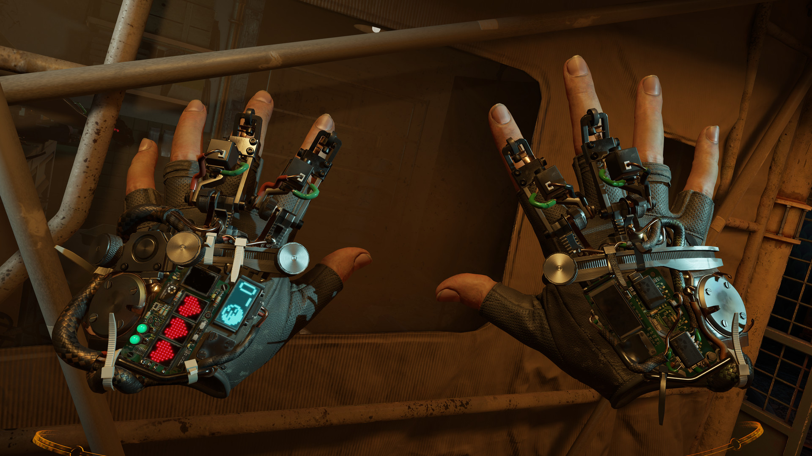
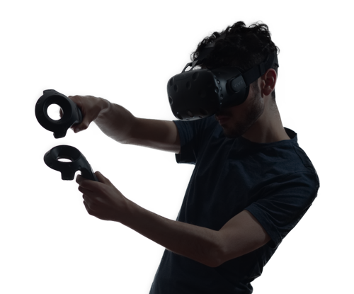

The Future
of Virtual Reality
What is VR?
-

The Headset
The centerpiece, one of many to choose from. Its a device with a screen inside, viewable through lenses to help simulate viewing the screen as though it was being viewed through your eyes.
-

In Game
There are many games coming out now that VR has gained traction. (covid19 totally helped) The picture shown is the game Half Life: Alyx and shows an example of what you might see while in game.
-

Uses
Pictured above is showing someone using the headset and controllers. They both have sensors built in to triangulate your in game location in relation to your outer surroundings.
Headset
I think virtual reality is an amazing technology because many people enjoy discovering and experiencing new things.
There are two main types of VR headset: inside out tracking, and outside in tracking; better known as base station tracking.
Inside out tracking is the type of headset that have cameras fixed to it that constantly video feed your surroundings and tells the headset where you are.
The drawbacks to this type is that it needs to be able to see the controllers to really interact with them, so if they were behind your back or something they wouldnt register.
The more popular version is base station tracking, which allows a greater range of movement.
This is because the tracking system is placed externally, in small devices that can be placed around the room. The headset compatible with this is fitted with sensors instead of cameras.
The base stations use a laser to sweep the room, which triangulates your location by communicating with the sensors on the headset and other compatible controllers.
There are a plethora of different genres of games that you can play, there really is an option for anyone. Check it out today!
Accessories
There are many different items that have been developed to make VR more realistic feeling.
- Controllers
- A vital part of your game experience, they can make you feel like youre actually grabbing things in game. Some even allow full finger tracking!
- Haptic Feedback
- Gloves allow you to feel things such as shooting a gun or hitting something in game.
- Vests and full body suits have a wider variety of uses, having a wider range of vibration intensity. They allow you to experience smaller details, such as rain hitting you or other players' touch.
- Mixed Reality
- A way to green-screen yourself into the game when recording videos to appear more immersive. Treadmills
- It was created for people with less space in mind, and to give more freedom, mobility, and safety.
- Secures the player's body to stay in one place.
- Anti-traction so you dont have to worry about walking into walls or leaving the treadmill's radius.